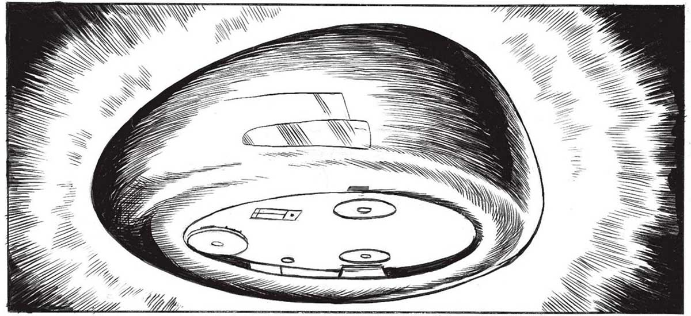
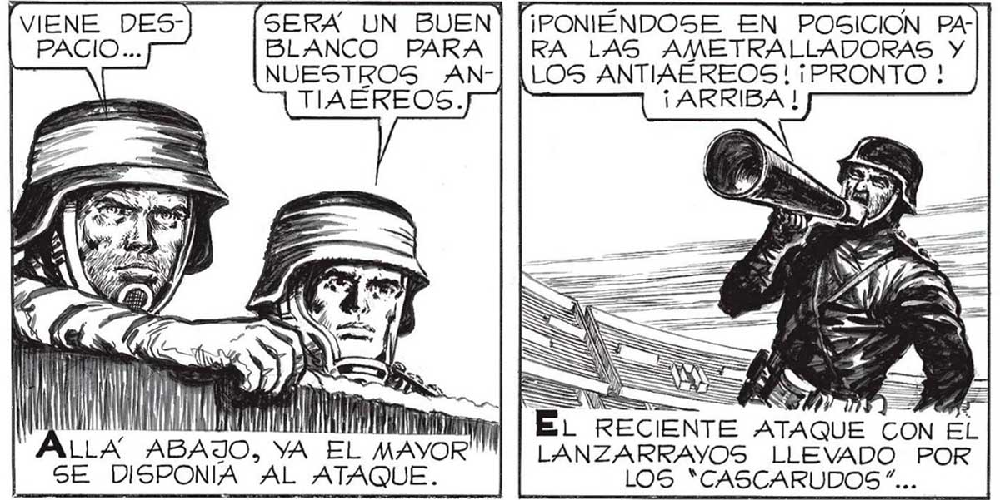

WOW ISK N NS SS = d e == == MN, 0 MV) SERA UN BUEN BLANCO PARA NUESTROS ANTIAÉREOS. ¡PONIENDOSE EN POSICION PARA LAS AMETRALLADORAS Y LOS ANTIAEREOS! ¡PRONTO ! ¡ ARRIBA ! e = => ue NS y = MM | EL RECIENTE ATAQUE CON EL ALLA ABAJO, AYO LANZARRAYOS LLEVADO POR SE DISPONIA AL ATAQUE. LOS *CASCARUDOS”... VA SE ACOSTUM”| SORDOS A BRARA, SEÑOR... co! 2 py y Ñ Y / / Y / TIN !) IN / WA .. HABÍA OBLIGADO A RETIRAR DE LO AlTO A LOS CA ÑONES Y LAS AMETRALLADORAS. PERO LOS SERVIDORES DE LAS PIEZAS, EN ES FUERZO SOBRE: HUMANO, LAS VOLVIERON A EMPLAZAR EN SEGUNDOS. NS NN MILI 10 144yy ani Veg A NUEVA! ¡NOS 7 A e , DY, Ze Y Y BIEN... ¡TIREN LO MAS RÁPIDO QUE PUEDAN! NO DEBE LLEGAR ARRIBA = | NUESTRO! ¡APUNTAR =| EL_LANZARRAYOS [PARA CUANDO APAREZCA ! Y, ? S <S ñ LATACAN POR EL AIRE! Z

